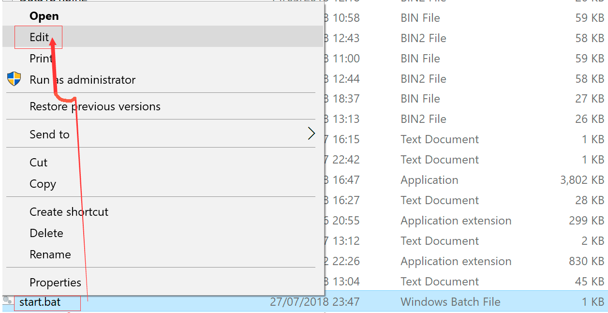

Claymore's Dual Ethereum AMD+NVIDIA GPU Miner
Fastest Ethereum/Ethash miner with lowest devfee
سهل سريع
أسرع عامل منجم ل Ethereum. سهل التخصيص. سهلة التركيب. أعلى سرعة التعدين.يعمل على جميع الأجهزة
يدعم كرت الشاشة Nvidia, AMdاصدار للويندوز واللينوكس.

الاستقرار والموثوقية
بامكانك اختيار كروت الجرافيك عند التعدين وكسر السرعة وضبط الحرارة والمروحة.
كلمه السر (password):
claymore
الخطوة 1: تنزيل البرنامج
بعد تحميل البرنامج وفك الضغط سنقوم باختيار Edit من قائمة الاختيارات عن طريق ضغط Right Click على أيقونة Start.
الخطوة 2: تعديل ملف start.bat 
EthDcrMiner64.exe -epool eu1.ethermine.org:4444 -ewal YOUR_WALLET ADDRESS_0x -eworker AHW -epsw xEthDcrMiner64.exe -epool eu1.ethermine.org:4444 -eworker AHW -ewal 0x1a0e2c4cd699cee12672adc223fdb30b93253eba -epsw xالخطوة 3: استبدال عنوان المحفظة الخاصة بك
كما نرى فى السطر الأخير بعد الأحرف -ewal قم بوضع عنوان المحفظة الخاصة بك بعد ذلك قم بوضع حرف . ثم اسم المنصة الذى تريده كما نرى وضعنا عنوان المحفظة ثم AHW.
الخطوة 4: بدء التعدين
بعد الانتهاء من الخطوات السابقة نقوم بالضغط علي زري Ctrl+S كي نحفظ ما قمنا بعمله، ثم نبدأ في تشغيل البرنامج عن طريق الضغط علي Start.
إذا اتبعت الخطوات المذكورة أعلاه ، فستشاهد هذه الشاشة.
لمتابعة مجريات عملية التعدين من خلال الدخول على الموقع و وضع عنوان المحفظة الخاصة بك فى خانة البحث.
نجد في تبويب Dashboard معدل Hashrates لدى منصات التعدين وكمية عملات Ethereum التي تمتلكها وعدد المنصات التي هي تحت قيد العمل مع رسم بياني توضيحي لهذه القراءات.
إذا أعجبك هذا البرنامج التعليمي ، فقم بتشغيل عامل المناجم على: Mining Pool Hub
الحساب "btw-media"
شكرا لكم!
أحدث نسخة هي v15.0
MD5: D50CB658CDC8A79251BB968AB25F0390 *Claymore's Dual Ethereum AMD+NVIDIA GPU Miner v15.0 - Windows.zip
(تنزيل لنظام Linux)
كلمه السر (password):
claymore
(Mega)
موارد المطور
- What is Ether? Read our FAQ
- Browse our source code on GitHub
- Read the documentation or wiki
- Learn Solidity
- See the latest data and network stats
- Download our logo assets
- Want to write about Ethereum? Press inquiries
- Engilsh version Switch Language
Note, when downloading the Claymore Miner, Windows may issue a warning, but if you used Claymore Dual Miner download link you can ignore this.
Disclaimer: This isn't an official Claymores site. No binary files were affected.
All rights belong to their respective owners. © 2018-2021